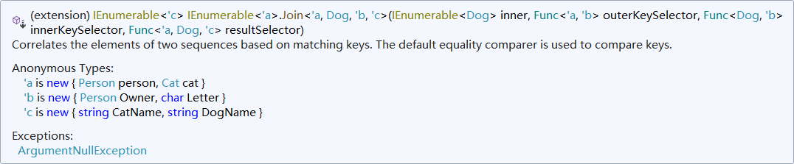

LINQ 教程（5）：join 从句
先让我们用以前的知识来实现
接着，我们继续讲解 LINQ 的新的一种从句类型：join 从句。这种从句的格式比较复杂，因为它比较像 SQL 里的连接表操作。
下文里，我们会把原本应该用的“联接”这种写法改为“连接”，这并不是打错，因为我们不必去区分两个词语的区别，它们都表示把两个事物拼接起来。
不过今天有点不同的是，由于前文叙述的实例（关键字实例）只有一个表，而且不太好讲述今天的内容，所以今天我们换一个例子：宠物和主人。我们预先创建好了如下的一些类。
1 | class Person : IEquatable<Person> |
其中 Person 类是人的信息（名和姓），而 Pet 类是宠物的信息（宠物名和主人）。当然，为了下文比较信息方便，我们尝试让 Person 类实现 IEquatable<Person> 接口，并重载它的等号和不等号运算符，以便后续使用运算符比较相等性。
并且提供如下的一些预先提供好，用来查找的信息：
1 | // Persons. |
为了方便，我们在最后也创建了两个列表，专门存放这些数据。
现在我们来尝试取出关联信息：输出所有宠物，以及它们对应主人的信息。这应该如何做到呢？我们最开始想到的写法是这样的：
1 | var selection = from pet in pets |
select从句使用了一个三元组，把宠物以及它们自己的主人的姓和名全部组织起来了。
这样就可以取出这些信息，然后输出它们：
1 | foreach (var info in petsInfos) |
于是，这样执行下来，确实可以得到结果：
1 | Daisy is owned by Magnus Hedlund |
听起来不错？我们来看看，另外一个思维如何。
我们这么思考这个问题。我们把两个数据列表关联起来。怎么关联呢？笛卡尔积就好。
笛卡尔积
笛卡尔积的概念
什么是笛卡尔积呢？在数据表里，我们常常会把所有字段挨个组合拼接起来。比如第一个列表有 3 个信息，而第二个表有 5 个信息。笛卡尔积就好比是把第一个表的每一个信息和第二个表的每一个信息挨个拼接起来，组合成一个具有 15 个信息的大表。这种组合方式有一个好处就是方便查询，而不需要每次把不同表的内容分开执行查询，然后再通过一些难受的操作组织整合起来。哪怕这样拼接起来是没有意义的。只要后续我们筛选掉这些无意义的数据就可以了。
查询表达式写法
比如，这里的两个表，我们做笛卡尔积，把每一个主人和每一个宠物都匹配一遍。只要找到主人的姓名信息和宠物的主人给出的信息一样，那我们就选出来。于是，我们的写法是这样的。
1 | var selection = from person in people |
注意书写格式和模式。这里在 from 从句下面还有一个新的 from 从句。这个写法是我们之前没有见过的。正是因为没有见过，所以我们作为新东西介绍给大家。这个写法就是在做笛卡尔积。它尝试在遍历每一个人的信息的时候，把每一个人都和每一个宠物作匹配。当目前计算到的这个人和宠物所属主人的信息是一样的时候，就选取出来。这样依然可以达到效果。
方法链写法
可以发现，它实际上在做两层 foreach 循环，外层就是这里的 people，而内层则是 pets。这是可以理解的。但 LINQ 不是这么去实现的，它为了能够完成对这个操作的迭代，它采用了一种“一对多”的机制，把每一个元素都匹配上所有的宠物。
当然，我相信这里的内容是目前内容里掌握起来最难的地方。不过我相信你能够多看几次就可以明白它们。
1 | var seletion = people.SelectMany(person => pets.Where(pet => person == pet.Owner).Select(pet => (pet.Name, person))); |
显然，这个写法有点长，我们尝试改写一下，Lambda 表达式是可以写成语句块的。
1 | var seletion = people.SelectMany(person => |
这样看起来似乎比刚才那种写法要清爽一些，那么我们尝试去理解一下这种写法。
点开 SelectMany 方法，你可以立马发现，这个方法的函数声明是这样的：
1 | IEnumerable<TResult> SelectMany<TSource, TResult>( |
首先第一个参数就是遍历的列表集合，显然这个就是扩展方法给出的对象类型实例，这个可以放一边。第二个参数则是 Func<TSource, IEnumerable<TResult>> 的类型，它表示你给出的一个 Lambda 表达式，传入一个 TSource 泛型类型，然后得到 IEnumerable<TResult> 类型，即一个 TResult 类型的可遍历集合。
可以看到，它想要告诉的是，你需要给出一个一对多的映射模型，即当我们的集合里的每一个元素，都必须按照后面给出的 Lambda 表达式，来一一对应，一个元素对应一个集合、一个元素对应一个集合……。这样来看，在后续执行的思路里，只要我们在内层筛选掉“一个集合”里这个集合的一部分不正确的部分。
例如这个例子里，它在内条件里用了 Where 方法，筛选掉了其中一部分，然后通过 Select 映射，来映射出一个宠物，对应的主人名字和宠物自己的名字。然后，外部调用了 SelectMany 方法，来让每一个人，都对应一组宠物信息（主人名和宠物名），然后它将会自动整合，形成一个自动整合好了的普通的序列，而不是多个一对多关系的序列。
那么，返回值是 IEnumerable<TResult> 类型的 SelectMany，这里对应的是什么方法呢？当然就是这里给的 IEnumerable<(string, Person)>。这便是印证了刚才说的整合序列的逻辑。
再来对比原本给出的查询表达式写法，可以发现，它的实现就完全不一样了。但仔细思考一下，实际上它想要表示的意思是这样的：
1 | foreach (var person in people) |
可以看到，一个 from 从句就翻译为一层循环，所以第二层循环已经在内部了，所以转译的方法链写法，显然筛选的操作应该写在 Lambda 表达式的内部，即内层，而不是方法链平行的外部。
注意，作笛卡尔积的操作，在查询里也称为交叉连接。
join 从句派生出来的各种连接类型
现在，我们终于可以学习新从句类型——join 从句了！不过，这个从句类型是目前学到的类型里最难的一种从句，所以它的类型也是丰富多样，我们得分很多类型分情况讲解。
交叉连接
第一种要介绍的连接方式就是交叉连接了。这是最基础也是最容易掌握的连接模式。不过，交叉连接就是笛卡尔积，所以这一节没有内容，请你往前翻一翻，上一节在讲解这一个内容。
内连接
第一种类型，我更喜欢称为“笛卡尔积连接”，因为它是从“笛卡尔积+筛选后连接”的方式变过去的。这种写法需要用到的方式是这样的写法：
1 | var selection = from person in people |
我们尝试把前文的例子转换为 join 从句。此时我们就可以看到，这个筛选模式得到的结果照样是正确的。首先，我们依旧从 from 从句开始，遍历每一个 person。接着，我们使用 join 从句开始连接另外一个列表 pets。在 people 表右侧拼接一个 pets 表，拼接条件是，当前拼接项的 person 和 pet 的主人属性值是一样的时候，我们就拼接起来。然后选取出宠物名称和宠物主人两大属性，作为选取项。
在打开 Intellisense 的时候，它会提示你转换为 Call-form，于是代码变为这样。
1 | var selection = people.SelectMany(person => |
结果发现，它和前文的写法基本上是一样的。你可以思考一下，为什么这两种写法完全是一样的。唯一的不同是，它把条件从运算符 == 转为了 object.Equals 方法，其它的地方完全没有变化。当然，你要注意，这里我建议你换为 == 运算符，而不要使用默认提供的 object.Equals 方法。因为 object.Equals 静态方法比较的两个对象，使用的仅仅是这两个对象的引用。
不过，实际上，虽然 Intellisense 提供这样的转换，但它并没有表示出完整的 join 从句想要表达的意思。所以，我们尝试使用 Join 方法的转换方法。
1 | var selection = people.Join( |
看起来好复杂的说。我们挨个来看，这四个参数的意思。第一个参数是为 people 表拼接的另外一张表的名称，这里肯定就是宠物表 pets 了；第二个参数是第一个比较参数 person；第三个参数是第二个比较参数 pet.Owner。这里指的比较参数就是我们在 join 从句里用作 A equals B 里的 A 和 B；第四个参数则是取出最终结果的 Lambda 表达式。
Lambda 表达式规定，当参数个数不为 1 个的时候，需要用小括号把所有参数括起来。这便是 Join 方法的使用方法。
组合键连接
下面我们把前文的内连接模式改一下。
试想一下，上一个实例里，如果我们并没有提供 IEquatable<Person> 的实现，那么 Person 类信息的比较就必须得拆开。好在我们拼接过程的时候，用的是 string，而 string 给出了一套完整的比较方式操作，不需要我们自己实现 string 的比较，所以我们可以把上面的代码改写为这样。
1 | var selection = from person in people |
或用匿名类型
1 | var selection = from person in people |
此时的拼接方式，就称为组合键比较模型。注意，值元组和匿名类型都提供了具体的逐个比较的完整比较的操作，它能够找到对应相同的字段，进行比较。哪怕无法完成正确的比较模式，它们也会使用默认的比较操作 GetHashCode 方法来比较哈希码。
当然，它的方法链模式写法是这样的。
1 | var selection = people.Join( |
当然，这个写法我没有写
Select方法来写出匹配let从句的内容，否则这样写起来读起来就很复杂了，不利于这里的学习。
多连接
下面我们来看更复杂的。我们把原本的例子的模型改一下，现在我们把宠物的类型进行细化：有猫也有狗。
1 | class Cat : Pet { } |
然后重新组表：
1 | var magnus = new Person { FirstName = "Magnus", LastName = "Hedlund" }; |
现在，我们尝试获取如下的拼接信息，来看看这个拼接模式得到的是什么吧：
1 | var selection = from person in people |
这个例子是比较难理解的。首先，它先把 people 表和 cat 表拼接起来（笛卡尔积），拼接条件是 person 和 cat.Owner 一样。这说明拼接出来的结果一定就是猫咪们和它们主人的匹配表了。接下来，再把这个匹配表再次和狗狗表 dogs 拼接起来。这一次，拼接条件是狗狗的主人要一致，而且狗狗和猫咪的首字母要一样。最终，我们再使用 select 从句，把狗狗和猫咪的名字选起来。
我们尝试调用上述筛选结果：
1 | foreach (var info in selection) |
这样将会出现两个结果：
1 | The cat "Daisy" shares a house, and the first letter of their name, with "Duke". |
可以发现，它们比较出来的结果显然是符合预期的。
偏偏最难的这个实例，我要让你来思考，这个查询表达式的 LINQ 方法链写法到底是如何的。
提示一下，如下图所示。

分组连接
如果我们依旧使用原本的例子（不区分猫咪和狗狗的例子），而要实现分组连接，即把每一个主人分组显示出它的所有宠物信息表，那么怎么做到呢？
1 | var selection = from person in people |
看下这个代码。我们依旧从 join 从句入手，把每一个宠物的信息和主人匹配上。接着，我们在 join 从句最后添加 into 从句，为其添加分组的成员表。什么是分组的成员表呢？这里指的是主人表右侧拼接的宠物信息。所以这里的 gj 变量，是一个宠物列表 IEnumerable<Pet>。
接着，我们尝试遍历该列表，然后取出主人信息，以及 gj 的每一个信息。这样你就会发现，它的执行结果居然是正确的：
1 | Magnus - Daisy |
但遗憾的是，Visual Studio 2019 的 IDE 好像不是很会识别类型的样子。把鼠标放到
into从句后的gj变量上，它会识别不出类型（而是显示的是“(范围变量) ? gj”，本应该显示的是“(范围变量) IEnumerable<Pet> gj”）。不过，这仅仅是一个显示 bug，因为后面的语句可以正常执行，并且在后面使用该变量的时候，这个类型可以被显示出来。这个 bug 目前（版本 15.3.9）尚未得到修复。
而实际上，它的写法和不进行分组连接的效果是一样的：
1 | var selection = from person in people |
这样执行的结果完全是一样的。
那么，请你思考一下，为什么这么写是完全没有问题的，以及它的方法链写法。
不过，分组连接比较复杂，它的方法链是这样的：
1 | var selection = people.GroupJoin( |
可以发现，这里的结果返回和前文给出的模式还有一点不一样。它最终提取出来的是一对多的模型（一个人对多个宠物），而在 LINQ 查询表达式里，最终取出来的是一对一的模型（一个人对一个宠物的所有情况）。虽说写法不同，但结果被完整展开后，它们其实是一样的。
而调用该结果，需要两层 foreach 循环：
1 | foreach (var info in selection) |
这样一来，就会发现，这个写法为什么叫做分组交换，就显得很清晰明了了。
接着，我们来另外看一种 GroupJoin 方法执行的写法。在 LINQ 里，GroupJoin 方法包含两个重载：
1 | // |
可以从元数据里看到，它的注释文字都非常多，你先慢慢看着。
实际上我们可以看到，第一个重载和第二个重载完全不同的地方就只有一处：第二个重载方法的参数里多了一个 IEqualityComparer<TKey> comparer。这个对象旨在用于自定义两个键值类型 TKey 的对象的相等性比较器。显然，这个参数在一般情况下都用不到，因为大多类型，只要自己实现了 IEquatable<TKey> 后，这个参数便可不用手动传递进去。
左外连接
接下来我们来提一下内连接（Inner Join）和外连接（Outer Join）。内连接在前文其实说到过，但没有细谈，因为内连接本身不属于今天要讲的内容，而是前置内容，需要你提前就清楚的东西，所以默认就在你明白了这一点，然后开讲。现在需要提到左外连接的时候，不得不需要说明清楚，所以这里提一下。
在关系数据库术语中，内部联接会生成一个结果集，在该结果集中，第一个集合的每个元素对于第二个集合中的每个匹配元素都会出现一次。 如果第一个集合中的元素没有匹配元素，则它不会出现在结果集中。由 C# 中的 join 从句或调用 Join 方法就可以实现内部联接。所以可以发现，前文给出的例子全部都是内连接，它们执行的行为和操作就是在查询所有满足要求的键值对，而没有出现的，确实没有在结果集合里出现。那么接下来，我们开始考虑外连接。
而外连接，则是返回一个大表，哪怕没有出现，这里的字段也应当置为 null（注意，此时的 null 的意义并非是指向不确定或指向默认位置的一个引用字面量，而是表示类似于数据库里存储的 null 值的意义——此时不存在或不清楚要填入什么值）。可以从此处看出，外连接可以分两种，左外连接（Left Outer Join）和右外连接（Right Outer Join），即分别表示返回左侧拼接结果，和返回右侧拼接结果。如图所示。
从 LINQ 语法角度来看，我们一般都是往后添加数据，所以我们很好实现左外连接，LINQ 为我们提供了一个很好用的 DefaultIfEmpty 方法，来表示我们拼接时如果数据为空时，就返回该类型默认值的方法，以轻松实现左外连接。
我们照旧使用宠物和主人的实例给大家演示，如何实现左外连接。
如果我们想要完整地把表格显示出来，哪怕有人没有养宠物（宠物信息为 null 作为默认值）：
1 | var selection = from person in people |
然后请注意最后返回的匿名类型里的 PetName 属性，以及执行内连接后进行分组连接操作得到的 gj 变量（宠物表）。这个属性给出的值是这样的：如果尝试遍历出来的每一个宠物 subpet，它为 null 值的话，将无法调用 Name 属性（因为 subpet 是一个引用类型，我们需要先判断它是否为 null，如果不为 null，才能使用 Name 属性来获取宠物自己的名字）。当 subpet 确定为 null 时，我们将返回一个默认显示结果：string.Empty，即 0 长度的字符串 ""。
然后，我们得到的 selection 便是这个匿名类型构建起来的一个列表集合。然后我们对每一个匿名类型进行遍历，输出它们的信息。注意，此时的 info.PetName 属性可能显示的是空字符串，所以没有输出任何可以看见的字符信息。
1 | <----- 15 ---->| |
可以看到，左外连接的使用其实并不困难，但需要显示整个表，就需要你额外调用一些方法，例如 DefaultIfEmpty，和使用一些操作来灵活处理它们。
右外连接
很抱歉的是，右外连接在 LINQ 里来举例并不是很合适。由于语法的制约，我们一般都在表格后添加一个表，然后进行拼接操作（或设计筛选条件拼接，比如上述的等值连接 join-in-on-equals 从句序列）。但 LINQ 从实现起来，如果需要达到右外连接的话，就相当于它的左侧添加一张表，但这显然是不好做到的，因为我们调用方法的顺序是顺次调用的（即方法链只能往下写代码），所以我们并不好做到右外连接的操作。
不过，如果你要实现它，也不是不可以。不过，你就得单独创建新表，然后在新的表上执行左外连接来达到同样的目的了。不过这样的操作还不如写成左外连接，所以我们不建议你在 LINQ 里使用右外连接。
非等值连接
最后，作为收尾的内容，我们再来讲解两个不是前面连接模式的其它连接方式，这些模式我们都可以称为自定义连接（Custom Join），这里介绍 1 种常见的自定义连接非等值连接（Nonequijoin）。
在前文的介绍里，我们解释了如何使用 join 从句（或是 Join 和 GroupJoin 方法）来达到我们大多时候可以做到的连接操作。这些时候，我们一般都使用到的是自然连接（也叫等值连接，Equijoin），可以从查询表达式里看到，这种写法直接引入了关键字 equals，可见 C# 的设计师们认为，等值连接是多么广泛的存在。
但在极少数情况下，我们依旧会使用非等值连接，即拼接两个表的条件并不是相等时才拼接，而是比较结果后拼接，比如左侧比右侧的结果大的时候，拼接两个表。这种拼接模式确实很难理解，但极少数情况下是存在的。由于 C# 语法设计师们认为，这种拼接模式比较少用，所以 join 从句就完全没有考虑到这一点的实现，于是从官网的原文上得到的信息是：
在查询表达式中，
join子句只限于同等联接（并针对其进行优化），这类联接到目前为止是最常见的联接操作类型。执行同等联接时，可能会始终使用join子句获得最佳性能。但是，在以下情况下不能使用
join子句：
- 当联接依据不等式表达式时（非同等联接）。
- 当联接依据多个等式或不等式表达式时。
- 当必须为联接操作前的右侧（内部）序列引入临时范围变量。
若要执行不是同等联接的联接，可以使用多个
from子句独立引入每个数据源。 随后可在where子句中将谓词表达式应用于每个源的范围变量。 表达式还可以采用方法调用的形式。
可见，这种连接模式有多么少见了。下面我们将给出该官网页面的两则实例，来给大家介绍非等值连接的用法和写法。
由于前文的宠物和主人实例对于这里的讲解有些困难，所以下面考虑一个新的实例，这个实例将贯穿下面的两种连接模型。
假如，我们在开一个杂货铺，给出两个类：
1 | class Product |
这两个类分别表示商品 Product 和商品的分类 Category。现在我们给出一系列的数据信息：
1 | var categories = new List<Category>() |
给出一些产品，以及产品的类型。下面我们来试着实现利用非等值连接。假如，我要取出两个表的笛卡尔积，那么很简单，写两层 from 从句即可。但我现在要取出商品的分类是存在于分类表里的所有商品，这怎么做呢？
实际上，这并不困难。我们只要两层遍历，并设计 where 从句即可：
1 | var nonEquijoinQuery = from p in products |
只要在分类表里遍历一下，然后取出每一个 ID 值，然后去看商品表的每一个元素，是否包含这些 ID 即可。如果包含，就选出来；如果没有就跳过。所以代码就是上面这样写的。
当然，调用起来也很简单：
1 | Console.WriteLine("Non-equijoin query:"); |
这样就可以得到结果集合了。
当然，在文档上不小心把内插字符串的
,写作了:，这里已经作出了改正。
至此，我们就把 join 的大致拼接类型全部都讲了一遍，不知道你是否都理解和消化了呢？
参考
- 复合 from 子句（为笛卡尔积一节提供资料）
- join 子句（为
join从句简单介绍一节提供资料） - 执行左外部连接（为左外连接一节提供资料）
- 执行自定义连接操作（为非等值连接一节提供资料）
- Enumerable.DefaultIfEmpty 方法（英文文档）
- Enumerable.GroupJoin 方法（英文文档）